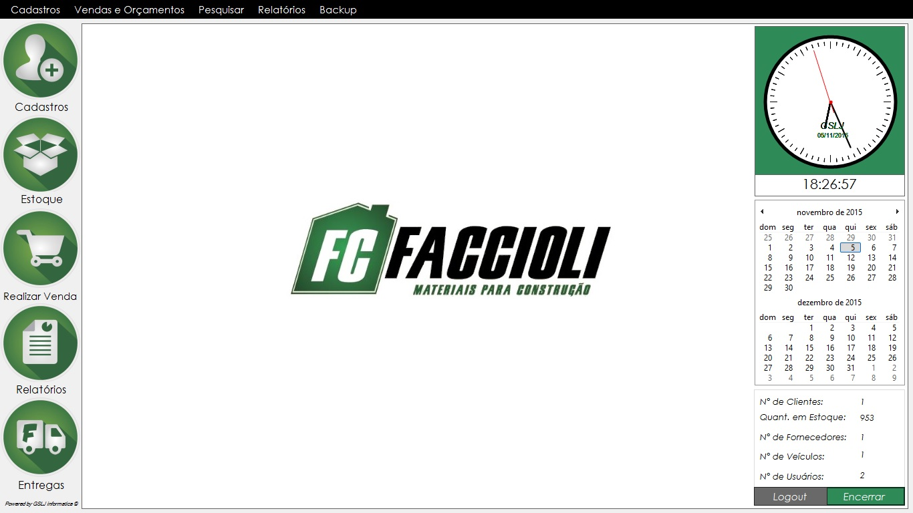
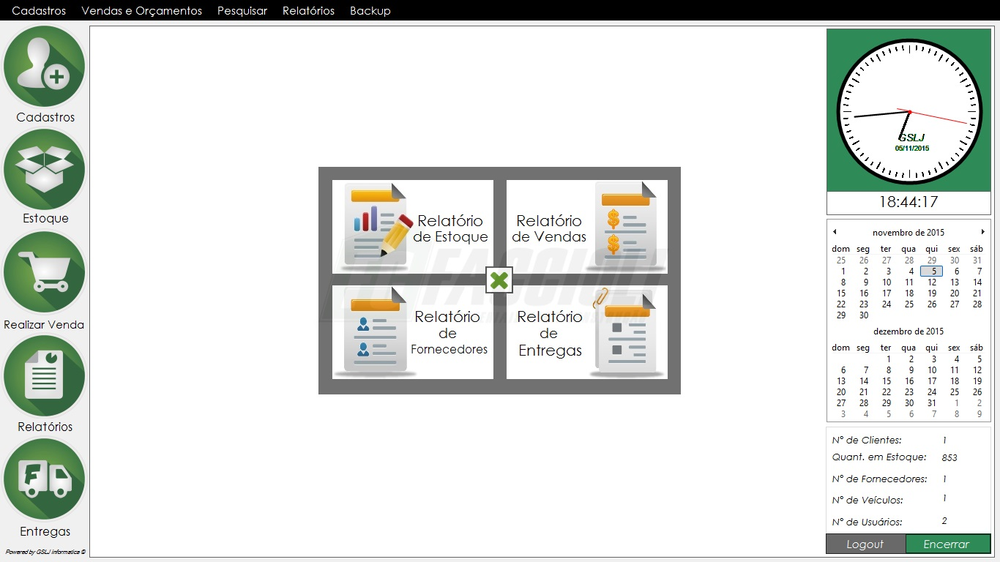

Sistema de Gerenciamento Privado:
O GERENCIADOR DE MATERIAS DE CONSTRUÇÃO (GMC) é um projeto voltado para a organização financeira e comercial de produtos em geral, idealizado para suprir todas as necessidades de uma loja contando com módulos para controle de estoque, vendas, entregas, funcionários, clientes, entre outros.
Dada à evolução da tecnologia nos meios de organização de dados se faz necessário um sistema que seja adaptado a estes meios para que objetivos como o ganho de produtividade e o aumento de comunicação entre o cliente e empresa possam ser realizados.
GMC :

